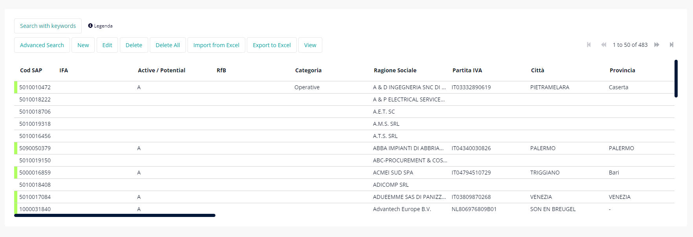
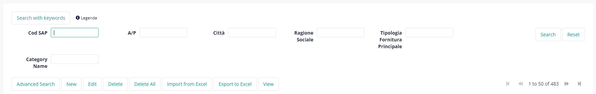

Vendor aims to make a list of suppliers available to all, the suppliers are linked to siemens with a contract, also called active (A). while suppliers who do not have a link with siemens but who could be new partners are called the possible (P). the list of suppliers therefore contains the entire list of suppliers, the user can search using a keyword in the table filter and search for one or more suppliers, for example: "Antenna", "Monitor", "Photovoltaic Panels" etc. the table has more filters that allow the user to do a more detailed search, search by fields: Services, Vendor Name, Location, Country, SAP Code status (green for active suppliers, blue for possible suppliers).
This is the table containing all the values. the table has 23 records, in fact scrolling to the right you can see all the other attributes of a supplier, while clicking the arrow at the top right you change the page displaying the other suppliers in the table.
The table has a filter, a search input based on a word, it is an advanced search filter that gives the user the possibility to search on one or more columns of the table.
